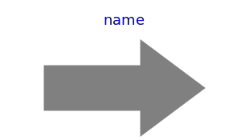
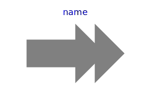
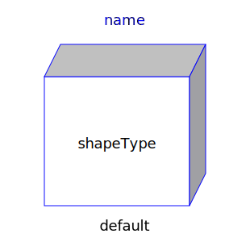
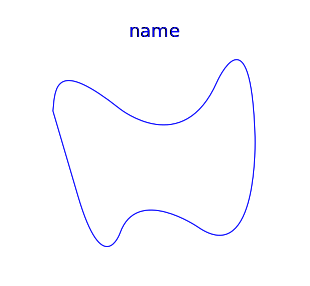
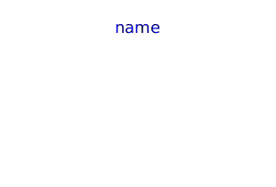

Package Visualizers.Advanced contains components to visualize 3-dimensional shapes with dynamical sizes. None of the components has a frame connector. The position and orientation is set via modifiers. Basic knowledge of Modelica is needed in order to utilize the components of this package. These components have also to be used for models, where the forces and torques in the frame connector are set via equations (in this case, the models of the Visualizers package cannot be used, since they all have frame connectors).
| Arrow | Visualizing an arrow where all parts of the arrow can vary
dynamically: |
| DoubleArrow | Visualizing a double arrow where all parts of the arrow can
vary dynamically: |
| Shape | Visualizing an elementary object with variable size. The
following shape types are supported: |
| Surface | Visualizing a moveable parameterized surface:
|
| PipeWithScalarField | Visualizing a pipe with a scalar field represented by a color
coding:
|
| Name | Description |
|---|---|
|  Arrow | Visualizing an arrow with variable size; all data have to be set as modifiers (see info layer) |
|  DoubleArrow | Visualizing a double arrow with variable size; all data have to be set as modifiers (see info layer) |
|  Shape | Visualizing an elementary object with variable size; all data have to be set as modifiers (see info layer) |
|  Surface | Visualizing a moveable, parameterized surface; the surface characteristic is provided by a function |
|  PipeWithScalarField | Visualizing a pipe with a scalar field |
|
|
Functions returning surface descriptions |